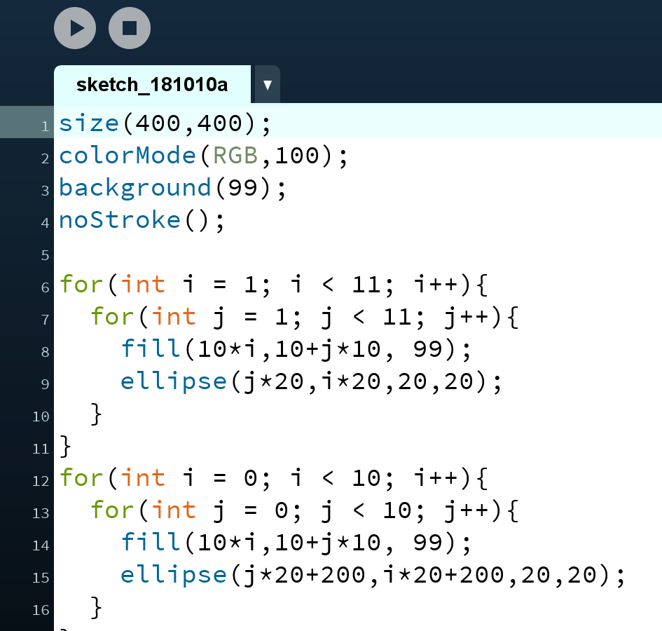
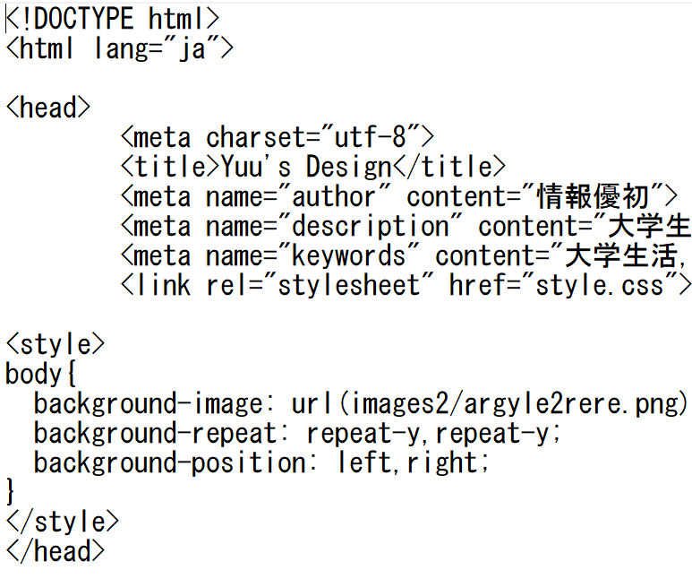
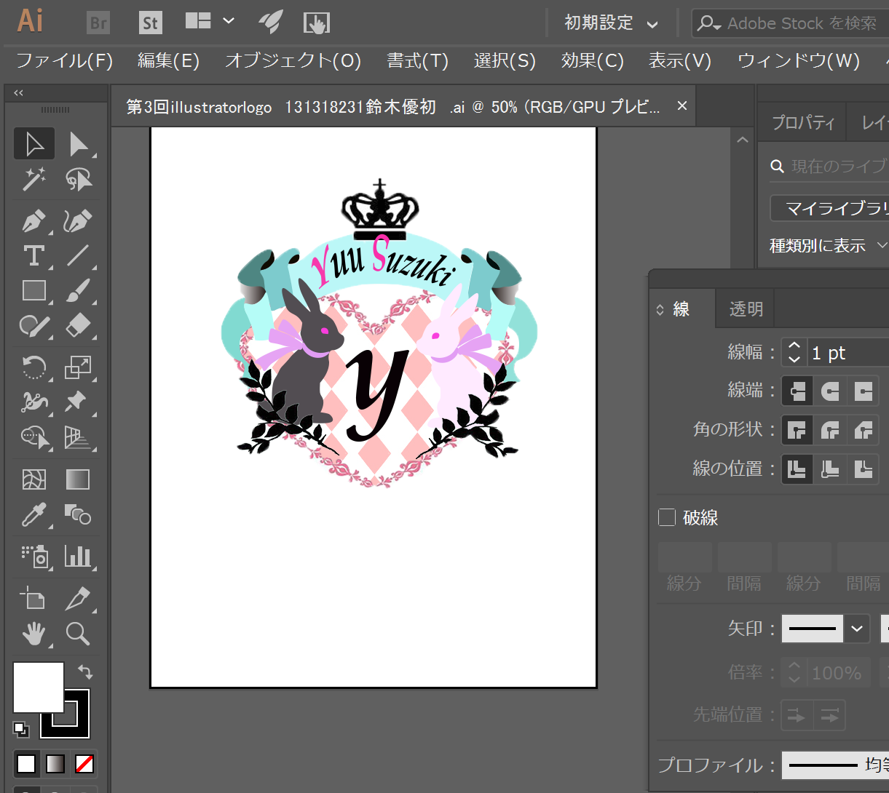
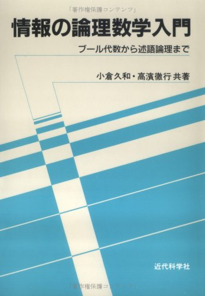

●前期時間割
| 月曜日 | 火曜日 | 水曜日 | 木曜日 | 金曜日 | |
|---|---|---|---|---|---|
| 1 | 音楽の世界 | 情報処理言論 | 情報デザイン基礎演習 | 情報処理実習A | |
| 2 | コンピュータ基礎 | 基礎社会学 | 情報処理実習A | ||
| 3 | ポピュラー・カルチャーの世界 | 英語ⅠC | 英語ⅠA | ||
| 4 | 情報基礎数学 | 女性と健康 | デザイン論及び演習Ⅰ | ||
| 5 | 人間の成長と心理 |
●後期時間割
| 月曜日 | 火曜日 | 水曜日 | 木曜日 | 金曜日 | |
|---|---|---|---|---|---|
| 1 | 法律と現代社会 | 情報処理実習B | |||
| 2 | 情報処理実習B | 映像・演劇の世界 | |||
| 3 | 情報数学A | 英語ⅠD | 英語ⅠB | プログラミング入門 | |
| 4 | 日本語A | デザイン論及び演習Ⅱ | |||
| 5 | 基礎統計学 |
専門科目について

●プログラミング入門●
processingというアプリをを利用してデザインやアニメーションなどの制作を行っています。
週一で出される課題により授業で学んだ知識だけでなく、より難易度の高い様々な技術に触れることができました。

●情報処理実習●
前期ではExcel,Wordの実技、後期ではHTML,cssによるホームページ作成を主に行っております。
HTML,cssはコードの繋がりが大切なので上手く反映されない時の対処がとても難しいです。

●デザイン論及び演習●
Illustrator,Photoshopを利用したデザイン(錯視,同時対比,ダイヤグラムなど)の作成を行っております。
みんなの作品を鑑賞することで新たな考え方や視覚的にどう認知できるかを理解しました。

●情報数学●
コンピュータによる情報処理の理解を深めるため、集合・関係・論理・ブール代数について学んでいます。
授業では情報処理技術者試験の過去問についても触れております。